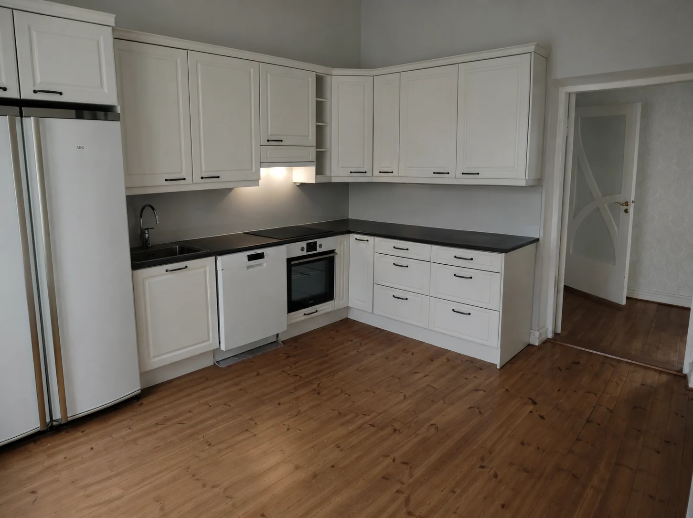
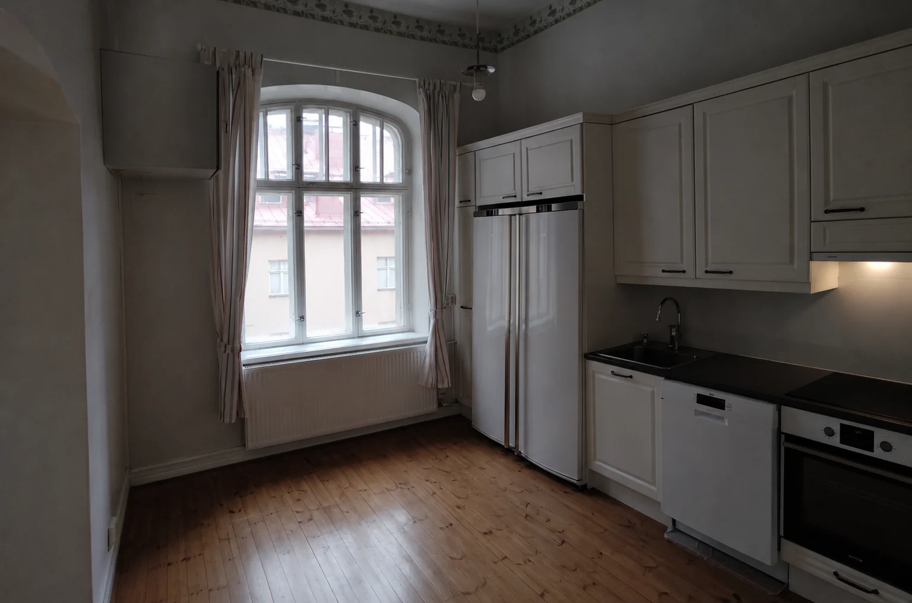
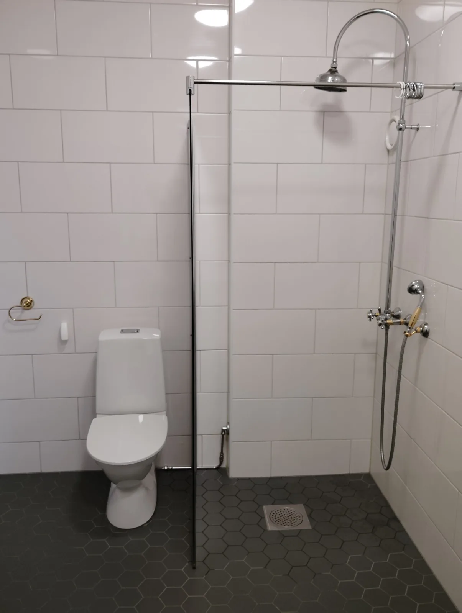
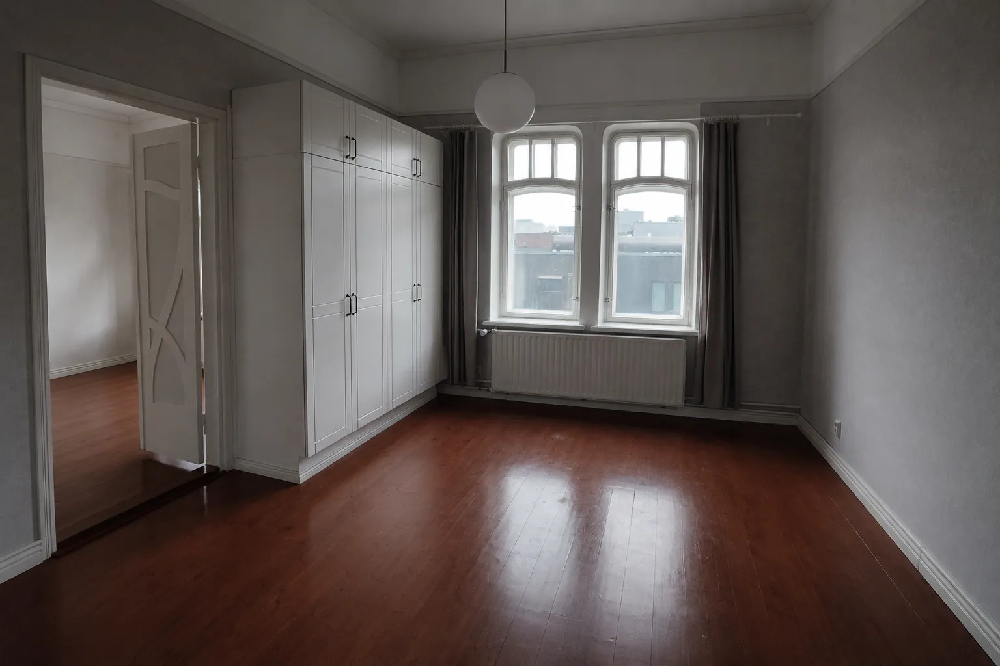
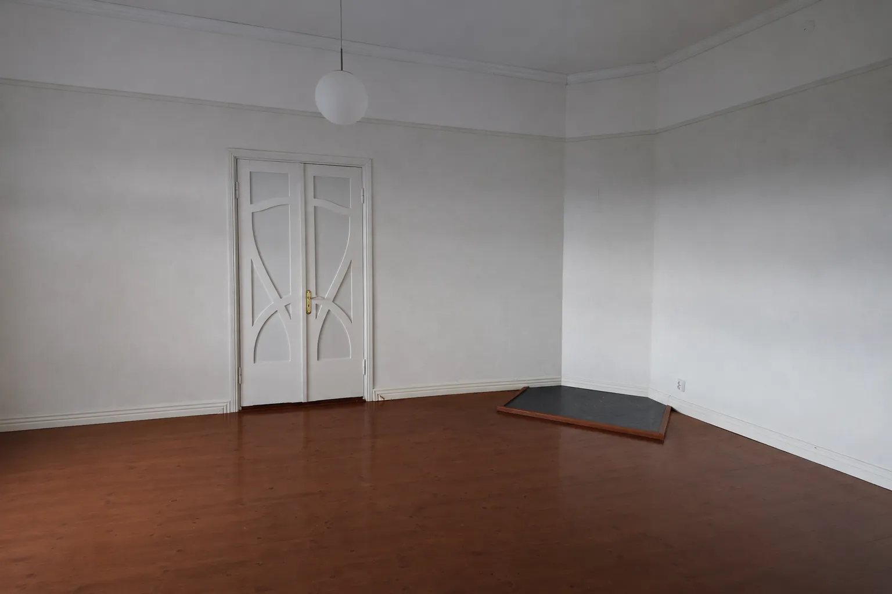
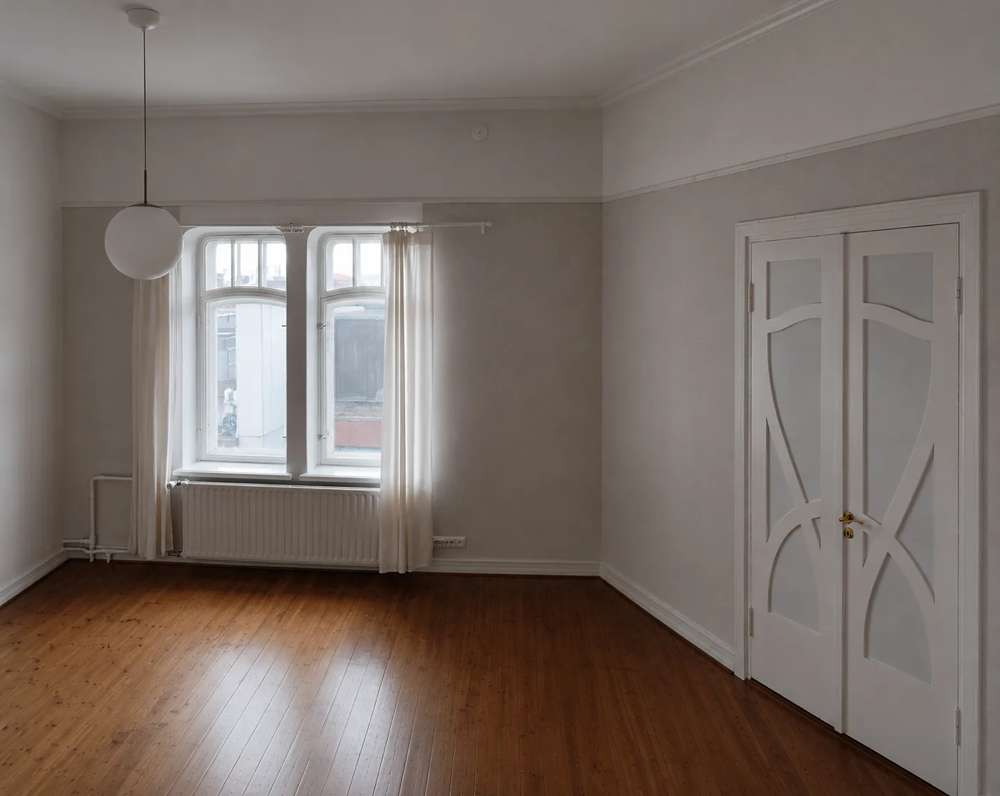

Move-Out Cleaning & Window Cleaning in Tampere
See the results of a professional move-out cleaning and window cleaning project completed for Kavi Hundal in Tampere. This apartment was thoroughly cleaned and prepared for property handover, including kitchen cleaning, bathroom sanitization, floor cleaning, dust removal and streak-free window cleaning.
Customer Review
"Very good experience and very thorough work."
Professional Move-Out Cleaning in Tampere
Moving out of an apartment requires more than simply removing furniture and personal belongings. Most landlords, property managers and housing companies expect the property to be thoroughly cleaned before the final inspection. This move-out cleaning project in Tampere was completed to help ensure the apartment was ready for a smooth handover.
The cleaning process included detailed kitchen cleaning, bathroom sanitization, floor cleaning, dust removal, surface cleaning and window cleaning. Every room was inspected to ensure a clean, fresh and presentable appearance for the next occupants.
Move-out cleaning is one of the most important steps when leaving a rental property. A properly cleaned apartment can help avoid unnecessary disputes, reduce stress and leave a positive impression during the final inspection process.
Why Professional Move-Out Cleaning Matters
Many people underestimate how detailed move-out cleaning can be. Areas such as kitchen cabinets, appliances, bathroom fixtures, doors, skirting boards and windows often require extra attention before a property is considered ready for handover.
Professional cleaning helps save time, improve cleaning quality and ensure no important areas are overlooked. For customers moving to a new home, this provides peace of mind during an already busy period.
This project demonstrates how a professionally cleaned apartment can look before the final handover. The photos and videos below show the actual cleaning results achieved during this Tampere move-out cleaning project.
Services Included In This Cleaning Project
Kitchen Deep Cleaning
Cleaning of worktops, sinks, appliances, cabinets, floors and kitchen surfaces.
Bathroom Cleaning
Deep cleaning and sanitization of shower areas, sinks, toilets and bathroom surfaces.
Window Cleaning
Professional window cleaning to remove dust, marks and streaks for a clearer finish.
Move-Out Preparation
Detailed cleaning designed to help prepare the apartment for landlord inspection and handover.
Watch The Cleaning Results
These videos show the completed move-out cleaning and window cleaning results. Videos are set to autoplay silently on mobile and desktop devices.
Move-Out Cleaning Project Gallery
Below are real photos from this move-out cleaning and window cleaning project completed in Tampere. Every image represents the actual condition of the apartment after professional cleaning.







Room-by-Room Cleaning Breakdown
Kitchen Cleaning
The kitchen received a detailed deep clean including countertops, sink areas, cabinet surfaces, flooring and visible fixtures. Kitchen cleaning is often one of the most important parts of a move-out cleaning inspection.
Bathroom Cleaning
Bathrooms require detailed attention due to moisture buildup, soap residue and general usage. All visible surfaces were cleaned and sanitized to improve presentation and hygiene.
Living Areas
Floors, skirting boards, doors, surfaces and accessible areas were cleaned to create a fresh appearance throughout the apartment.
Window Cleaning
Windows were professionally cleaned to remove dust, marks and streaks. Clean windows improve natural light and help create a positive impression during property inspections.
Frequently Asked Questions About Move-Out Cleaning in Tampere
How much does move-out cleaning cost in Tampere?
The cost depends on the apartment size, condition of the property and whether additional services such as window cleaning are included. Contact Tyozy for a free quote tailored to your property.
Is window cleaning included in move-out cleaning?
Window cleaning can be included as part of a complete move-out cleaning package. Many landlords and housing companies appreciate professionally cleaned windows during final inspections.
How long does move-out cleaning take?
The duration depends on the property's size and condition. Most apartments can be completed within a few hours, while larger properties may require additional time.
Do landlords require move-out cleaning?
Most landlords, property managers and housing companies expect the property to be thoroughly cleaned before handover. A professional cleaning service can help meet these expectations.
Do you provide cleaning services outside Tampere?
Yes. Tyozy provides cleaning services in Tampere and nearby municipalities including Pirkkala, Nokia, Ylöjärvi, Lempäälä, Kangasala and surrounding areas.
Move-Out Cleaning Services in Tampere and Nearby Areas
Tyozy provides professional move-out cleaning, apartment cleaning and window cleaning services throughout Tampere and surrounding municipalities. Whether you are moving out of a studio apartment, family home or rental property, our team helps prepare the property for inspection and handover.
We regularly serve customers in Hervanta, Kaleva, Keskusta, Tesoma, Lentävänniemi, Atala, Vuores, Tammela and other areas of Tampere. We also provide cleaning services in Pirkkala, Nokia, Ylöjärvi, Kangasala and Lempäälä.
Our move-out cleaning service focuses on attention to detail, helping tenants, homeowners and property managers maintain high standards before the property changes occupancy.
Related Cleaning Services
Move-Out Cleaning
Professional end-of-tenancy cleaning services for apartments and houses.
Window Cleaning
Streak-free window cleaning for homes, apartments and commercial properties.
Deep Cleaning
Detailed cleaning services for kitchens, bathrooms and living areas.
House Cleaning
Regular and one-time cleaning services throughout the Tampere region.
Why Customers Choose Tyozy
Reliable Scheduling
Arrive on time and complete the work according to the agreed schedule.
Professional Standards
Detailed cleaning methods designed to prepare properties for inspection.
Transparent Pricing
Clear quotes with no hidden surprises.
Local Service
Serving Tampere and surrounding municipalities.
Need Move-Out Cleaning or Window Cleaning in Tampere?
Whether you're preparing a rental property for inspection or moving into a new home, Tyozy can help make the process easier with professional cleaning services.
Request a free quote today and let us help prepare your property for a smooth handover.